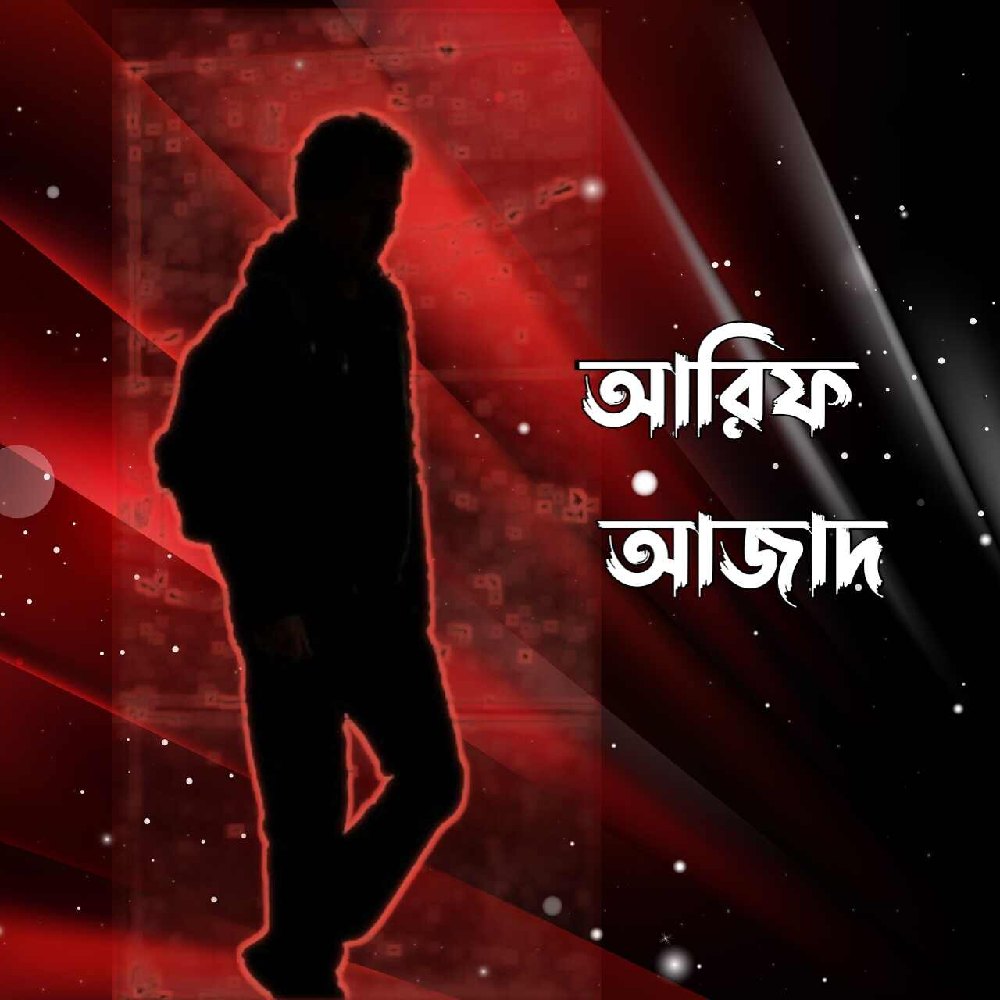

Homepage
Email
Israq's Library
Select your author
Dr. Khandaker Abdullah Jahangir
ড. খোন্দকার আব্দুল্লাহ জাহাঙ্গীর (রাহি.) একজন প্রখ্যাত আলেম, বহু গ্রন্থ প্রণেতা ও আস সুন্নাহ ট্রাস্টের প্রতিষ্ঠাতা। তিনি ছিলেন এই উপমহাদেশের অন্যতম সেরা আলিম এবং মুজাদ্দিদ। সৌদি আরবের রাজধানী রিয়াদে অবস্থিত ইমাম মুহাম্মদ বিন সউদ ইসলামি বিশ্ববিদ্যালয় থেকে লিসান্স, মাস্টার্স ও পিএইচডি ডিগ্রি লাভ করেন।
Read Books
Shaikhul Islam Mufti Muhammad Taqi Usmani
মাওলানা মুফতী মুহাম্মাদ তাকী উসমানী (জন্ম: ১৯৪৩) পাকিস্তানের একজন প্রখ্যাত ইসলামী ব্যক্তিত্ব। তিনি হাদীস,ইসলামী ফিকহ,তাসাউফ ও অর্থনীতিতে বিশেষজ্ঞ। তিনি বর্তমানে ইসলামী অর্থনীতিতে সক্রিয় ব্যক্তিদের অন্যতম। তিনি ১৯৮০ সাল থেকে ১৯৮২ সাল পর্যন্ত পাকিস্তানের কেন্দ্রীয় শরীয়াহ আদালতের এবং ১৯৮২ থেকে ২০০২ সাল পর্যন্ত পাকিস্তান সুপ্রিম কোর্টের শরীয়াহ আপিল বেঞ্চের বিচারক ছিলেন। তিনি ইসলামী ফিকহ্ ,হাদিস,অর্থনীতি এবং তাসাউউফ সম্পর্কে বিশেষজ্ঞ। তিনি বিখ্যাত তাফসীরগ্রন্থ “মাআরিফুল কোরআন”এর রচয়িতা মুফতি শফী উসমানীর সন্তান এবং বিখ্যাত দুই ইসলামী ব্যক্তিত্ব মাওলানা রফী উসমানী ও মাওলানা ওয়ালী রাজীর ভাই।
Read Books
Hakeemul Ummat Maulana Ashraf Ali Thanvi
আশরাফ আলী থানভী (জন্ম: আগস্ট ১৯, ১৮৬৩ - মৃত্যু: জুলাই ৪, ১৯৪৫) ছিলেন একজন দেওবন্দী আলেম, সমাজ সংস্কারক, ইসলামি গবেষক এবং পুরোধা ব্যক্তিত্ব। তিনি ভারতের থানাভবনের নিবাসী হওয়ার কারণে তার নামের শেষে "থানভী" যোগ করা হয়। ভারত উপমহাদেশ এবং এর বাইরেরও হাজার হাজার মানুষ তার কাছ থেকে আত্মশুদ্ধি এবং তাসাওউফের শিক্ষা গ্রহণ করার কারণে তিনি "হাকীমুল উম্মত" (উম্মাহর আত্মিক চিকিৎসক) উপাধিতে পরিচিত। মুসলমানদের মাঝে সুন্নতের জ্ঞান প্রচারের সংস্থা দাওয়াতুল হক তারই প্রতিষ্ঠিত।
Read Books
Mizanur Rahman Azhari
মিজানুর রহমান আজহারি। তরুণ চিন্তক এবং জনপ্রিয় ইসলামি আলোচক। বিশ্ববিখ্যাত আল আজহার ইউনিভার্সিটির তাফসির অ্যান্ড কুরআনিক সাইন্স ডিপার্টমেন্ট থেকে স্নাতক সম্পন্ন করেছেন। ইন্টারন্যাশনাল ইসলামিক ইউনিভার্সিটি মালয়েশিয়া-এর ডিপার্টমেন্ট অব কুরআন অ্যান্ড সুন্নাহ স্টাডিজ থেকে স্নাতকোত্তর শেষে সেখানেই পিএইচডি গবেষণা করছেন। স্বপ্ন দেখেন-ইনসাফ, আদল ও ইহসানের ভিত্তিতে এক উন্নত সমাজকাঠামোর। তরুণ প্রজন্মকে উজ্জীবিত করার চেষ্টা করেন বিশ্বাসের পরশে। বোধ ও সামর্থ্যরে সর্বোচ্চটুকু দিয়ে কুরআন ও সুন্নাহর কথামালা তুলে ধরার প্রয়াস নেন জনপদ থেকে জনপদে, কি-বোর্ডে কিংবা ক্যামেরার সামনে।
Read Books
Dr. Zakir Naik
জাকির আব্দুল করিম নায়েক একজন ভারতীয় ইসলামি চিন্তাবিদ, ধর্মপ্রচারক, বক্তা ও লেখক যিনি ইসলাম ও তুলনামূলক ধর্মতত্ত্ব বিষয়ে কাজ করেন। পেশাগত জীবনে তিনি একজন ডাক্তার হলেও ১৯৯১ সাল থেকে তিনি ইসলাম ধর্ম প্রচারে মনোনিবেশ করেন। ইসলাম এবং তুলনামূলক ধর্মের উপর তিনি তার বক্তৃতার বহু পুস্তিকা সংস্করণ প্রকাশ করেছেন। তিনি অলাভজনক প্রতিষ্ঠান ইসলামিক রিসার্চ ফাউন্ডেশন প্রতিষ্ঠাতা যেটি পিস টিভি নেটওয়ার্ক পরিচালনা করে থাকে, যার মাধ্যমে তাঁর বক্তৃতা প্রায় দশ কোটি দর্শকের নিকট পৌঁছে যায়। তাকে "তুলনামূলক ধর্মতত্ত্বের একজন বিশেষজ্ঞ", "টেলিভিশনভিত্তিক-ধর্মপ্রচারণার সেরা এবং আধুনিক ইসলামের একজন পৃষ্ঠপোষক" এবং "পৃথিবীর শীর্ষস্থানীয় ইসলাম ধর্মপ্রচারক" বলা হয়ে থাকে। বহু ইসলামি ধর্মপ্রচারকদের সাথে তার ভিন্নতা হল, তার বক্তৃতাগুলো পারস্পারিক আলাপচারিতা ও প্রশ্নোত্তরভিত্তিক, যা তিনি বেশিরভাগ সময়ই ইংরেজি ভাষায় প্রদান করেন।
Read Books
Dr Shamsul Arefin Shakti
বাংলাদেশের জনগণের বেশিরভাগই ইসলাম ধর্মে বিশ্বাসী, আর সংখ্যাগরিষ্ঠ এই মুসলিম জনগোষ্ঠীর নিজেদের ধর্মের বিভিন্ন বিষয়ে সম্যক জ্ঞান অর্জনের জন্য প্রয়োজন হয় নানাবিধ পড়াশোনার। আর বিস্তৃত এই পড়াশোনার সুযোগ করে দিতে ইসলামের বিভিন্ন বিষয় সম্পর্কে গবেষণা ও আলোচনা নিয়ে এবং বিভিন্ন ইসলামি আদর্শ ও মতবাদমূলক বই রচনা করে সম্প্রতি আলোচনায় এসেছেন ডা. শামসুল আরেফীন। পেশাগত জীবনে তিনি একজন সরকারি চাকরিজীবী হলেও একজন মুসলমান হিসেবে ইসলামি আদর্শে বলীয়ান হয়ে তিনি রচনা করেছেন বেশ কিছু ইসলাম সম্পর্কিত বই, যেগুলোর কোনোটি রচিত হয়েছে গল্পের আকারে, আবার কোনোটি রচিত হয়েছে প্রবন্ধ হিসেবে।
Read Books

Arif Azad
লেখক আরিফ আজাদ ১৯৯০ সালের ৭ জানুয়ারি,চট্টগ্রাম জেলায় জন্মগ্রহন করেন। তিনি মাধ্যমিক পাশ করেন চট্টগ্রাম জেলা স্কুল থেকে। একটি সরকারি কলেজ থেকে তিনি উচ্চ মাধ্যমিক শেষ করে চট্টগ্রাম বিশ্ববিদ্যালয়ে পরিসংখ্যান বিভাগে ভর্তি হন এবং এখান থেকেউচ্চশিক্ষা শেষ করেন। তরুণ এই লেখক একাদশ শ্রেনীতে থাকাকালীন লেখালেখি শুরু করেন।তবে তার লেখা প্রথম বই প্যারাডক্সিক্যাল সাজিদ ২০১৭ সালে একুশে বইমেলায় প্রকাশিত হলে তা ব্যপক আলোড়নের সৃষ্টি করে। তারপর থেকে নিয়মিত প্রকাশিত হতে থাকে আরিফ আজাদের অন্যান্য বইগুলো। লেখালেখির ক্যারিয়ারের শুরু থেকেই আরিফ আজাদ এর বই সমূহ পাঠক মহলে ব্যাপক সাড়া ফেলে।
Read Books
Sheikh Ahmadullah
শায়খ আহমাদুল্লাহ বাংলাদেশের স্বনামধন্য ইসলামী ব্যক্তিত্ব। বিদগ্ধ আলোচক, লেখক ও খতীব। ইসলামের খেদমতে তিনি নানামুখী কাজ করেন। লেখালেখি, গবেষণা ও সভা-সেমিনারে লেকচারসহ নানামুখী দাওয়াতি কার্যক্রম পরিচালনা করেন। উন্মুক্ত ইসলামিক প্রোগ্রাম ও প্রশ্নোত্তরমূলক অনুষ্ঠানে অংশগ্রহণ এবং টিভি অনুষ্ঠানে সময় দেওয়াসহ বহুমুখী সেবামূলক কাজে সপ্রতিভ গুণী ও স্বনামধন্য এই আলেমে দীন। দেশে-বিদেশে শিক্ষা, সেবা ও দাওয়াহ— ছড়িয়ে দিতে তিনি প্রতিষ্ঠা করেছেন আস-সুন্নাহ ফাউন্ডেশন।
Read Books
Sazid Islam
নির্ভরযোগ্য তথ্য নেই
Read Books
Abu Taher Misbah
আবু তাহের মিসবাহ (জন্ম: ৬ মার্চ ১৯৫৬), যিনি আদিব হুজুর নামেও পরিচিত, একজন বাংলাদেশি দেওবন্দি ইসলামি পণ্ডিত, শিক্ষাবিদ ও লেখক। বাংলা সাহিত্যিক আলেম হিসেবে তার পরিচিতি রয়েছে। আল জামিয়া আল ইসলামিয়া পটিয়ায় লেখাপড়া সমাপ্ত করে তিনি শিক্ষকতায় নিযুক্ত হন। নূরিয়া মাদ্রাসায় শিক্ষকতাকালে তিনি হাতে লেখা আরবি পত্রিকা ইকরা প্রকাশের মাধ্যমে একটি শিক্ষা সংস্কার আন্দোলনের সূচনা করেন। পরবর্তীতে তার চিন্তাধারার আলোকে প্রতিষ্ঠা করেন মাদরাসাতুল মদিনা। এখান থেকে তার প্রবর্তিত শিক্ষা পদ্ধতি মাদানি নেসাব নামে পরিচিত। পরবর্তীতে তার প্রবর্তিত শিক্ষা পদ্ধতি সারাদেশে ছড়িয়ে পড়ে। মাদানি নেসাবের জন্য তার রচিত প্রথম পাঠ্যবই এসো আরবি শিখি, যেটি বাংলাদেশে আরবি শিখার প্রাথমিক গ্রন্থ হিসেবে পঠিত হয়। তার রচিত অন্যান্য পাঠ্যবইয়ের মধ্যে রয়েছে: এসো সরফ শিখি, এসো নাহু শিখি, এসো বালাগাত শিখি, এসো ফিকাহ শিখি, এসো উর্দু শিখি, এসো কলম মেরামত করি, ইসলামকে জানতে হলে, আত তামরিন, এসো তাফসির শিখি। এসো কোরআন শিখি তার লেখা উপমহাদেশের মাদ্রাসা ছাত্রদের কুরআন বিষয়ক প্রথম প্রাথমিক গ্রন্থ। আল মানার ও আল মুজামুল ওয়াসিত তার রচিত দুটি আধুনিক আরবি-বাংলা অভিধান।
Read Books
Engineer Moinul Hossain
প্রকৌশলী মইনুল হোসেন ২৭ ঘন্টায় কুরআন শিক্ষা বই রচনা এবং প্রযুক্তি নির্ভর কুরআন শিক্ষার জন্য জনপ্রিয়তা লাভ করেন।
Read Books
Abdur Razzak Bin Yusuf
শায়খ আব্দুর রাজ্জাক বিন ইউসুফ বাংলাদেশের উত্তরাঞ্চলের জেলা চাপাইনবাবগঞ্জের দেবীনগর উপজেলার অধীন মাওলা বক্স হাজীরটলা গ্রামে এক ধার্মিক পরিবারে জন্ম গ্রহন করেন।পড়াশোনাঃ এলাকার মক্তবে শিক্ষা জীবনের হাতে খড়ি হওয়ার পর তিনি নাচল নবাবগঞ্জ মাদরাসা থেকে হাদীসের অন্যতম কিতাব মিশকাত শরীফ পর্যন্ত পড়েন। তারপর উচ্চ শিক্ষার আশায় ভারত গমন করেন এবং উত্তর প্রদেশের দারুল উলুম মউনাথভাঞ্জান থেকে দাওরা হাদীস শেষ করেন। তিনি দুই বার দাওরা হাদীস শেষ করেছেন। তারপর দেশে ফিরে কর্ম জীবনের পাশাপাশি ফাজিল ও কামিল পরীক্ষায় অংশ গ্রহন করেন। তিনি হাদীস ও তাফসীর নিয়ে ১ম বিভাগে কামিল পাশ করেন। শায়খের বক্তব্যের অন্যতম বৈশিষ্ট্য হচ্ছে তিনি মাজহাব ও মাসলাক নির্বিশেষে আম মুসলমানদের উদ্দেশ্যে নসীহত মূলক বক্তব্য দেন । বিশেষ করে জান্নাত, জাহান্নাম, কিয়মাত, আদর্শ পরিবার, কে বড় ক্ষতি গ্রস্ত ইত্যাদি বিষয়ে তারবক্তব্য মাসলাক মাজহাব নির্বিশেষে সকল মুসলমানের হৃদয়ে নাড়া দিতে সক্ষম। ইসলামী শিক্ষাকে বাংলাদেশে ছড়িয়ে দেয়ার জন্য তিনি অনেক প্রতিষ্ঠান প্রতিষ্ঠা করেন যেমন: আল জামিয়াতুস সালাফিয়া, রুপগঞ্জ নারায়নগঞ্জ, আল মাদ্রাসাতুস সালাফিয়া, আটমল, বগুড়া, বীরকুস্টিয়া দারুল হাদীস সালাফিয়া মাদরাসা বগুড়া। এবং অনেক প্রতিষ্ঠানকে সামনের দিকে এগিয়ে দিতে সহযোগিতা করেন। যেমন আল মারকাজুল ইসলামী আস সালাফী, রাজশাহী এবং মহিলা সালাফিয়া মাদরাসা, রাজশাহী।
Read Books
Imam Ibn Taymiyyah
তাকিউদ্দিন আহমাদ ইবন আব্দুল হালিম ইবন আব্দুস সালাম আন-নুমায়রি আল-হাররানি (আরবি: تقي الدين أحمد بن عبد الحليم بن عبد السلام النميري الحراني; ২২ জানুয়ারি ১২৬৩ – ২৬ সেপ্টেম্বর ১৩২৮), যিনি ʾইবনে তাইমিয়াহ (ابن تيمية) নামে ও পাশাপাশি শায়খুল ইসলাম উপাধিতে অধিক পরিচিত ছিলেন একজন সুন্নি ইসলামি পণ্ডিত, মুহাদ্দিস, ধর্মতাত্ত্বিক, বিচারক, আইনজ্ঞ, মুজাহিদ এবং একজন চিন্তক ও রাজনৈতিক ব্যক্তিত্ব ছিলেন। তিনি ইলখানাতের শাসক গাজান খানের সঙ্গে কূটনৈতিক সম্পৃক্ততা এবং মারজ আল-সাফফারের যুদ্ধে বিজয়ী কৃতিত্বের জন্য খ্যাত যার ফলে লেভান্তে মঙ্গোল আক্রমণের অবসান ঘটেছিল।
Read Books